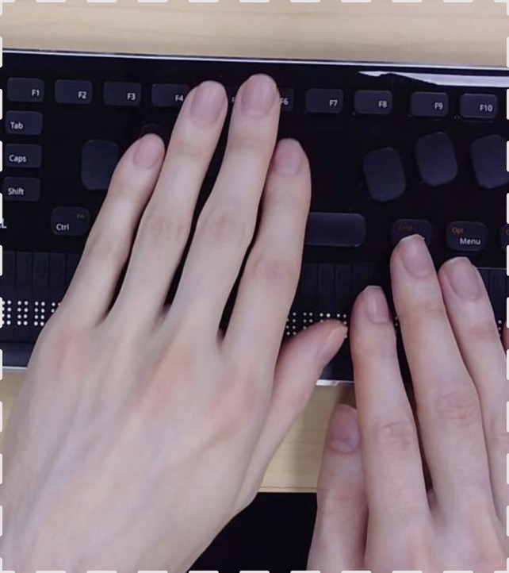
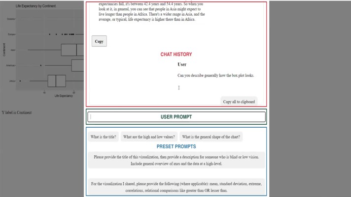
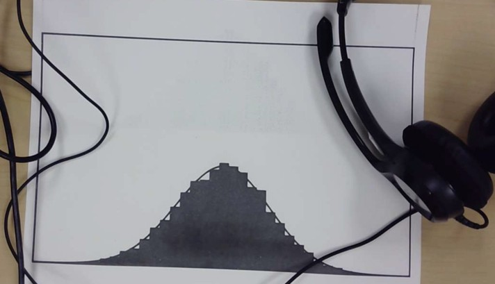
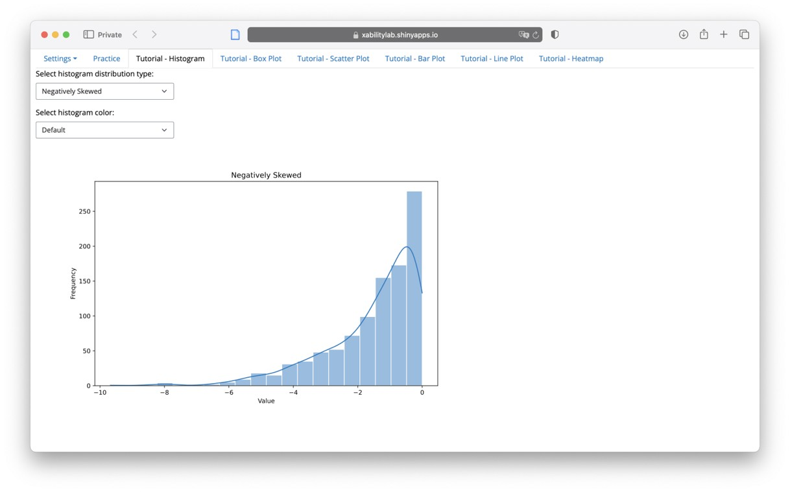
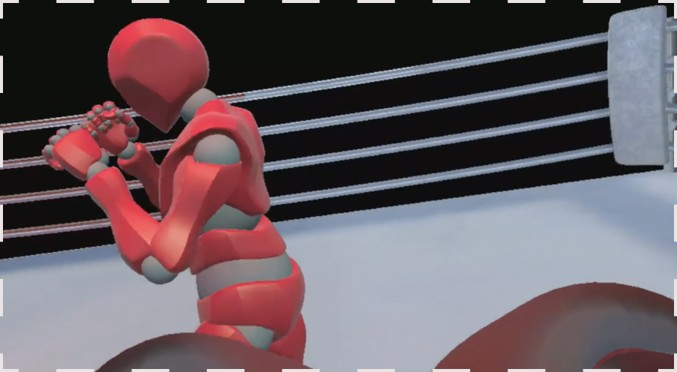
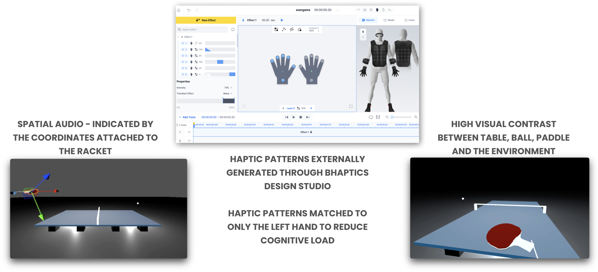
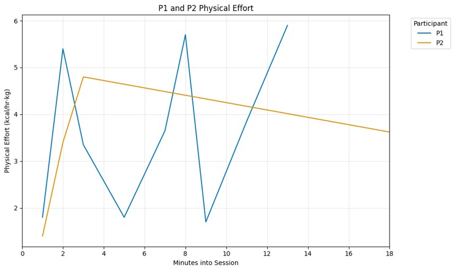
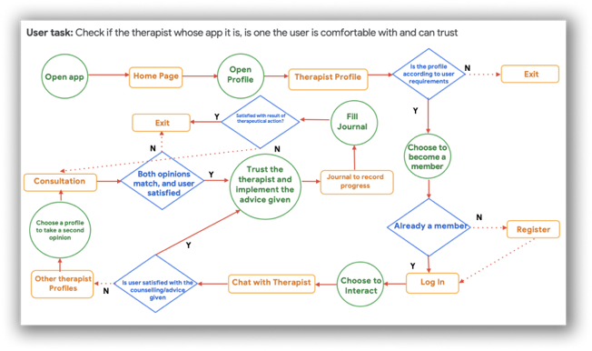
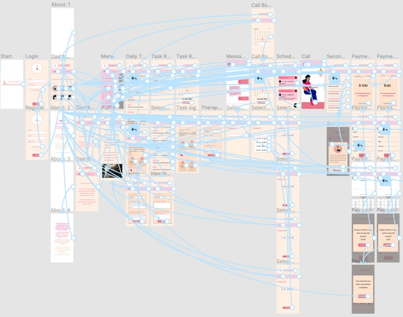

Case Studies
Featured Research & Design Projects
Below are detailed case studies that demonstrate my research approach, methodologies, and impact. Each case study highlights different aspects of my UX research expertise across various domains.
Enhancing Data Accessibility through Multimodal UX for BLV Users (MAIDR Project)
Research Ethics Conversational AI Accessibility Mixed Methods Research Data Visualization
January 2024 - Present
Project Context
When I joined the MAIDR team, a pressing research gap was immediately visible:
While large language models (LLMs) could generate text descriptions of complex data visualizations, there was no structured understanding of how Blind and Low Vision (BLV) users would interact with, trust, customize, or verify these outputs.
Equally important, there was minimal insight into how tactile, auditory, and braille modalities independently supported users’ cognitive and emotional engagement with data.
As a mixed-methods UX researcher, I positioned my work around filling these gaps systematically through multi-phase, user-centered investigations.
Research Objective
How can multimodal and AI-driven systems enable independent, trustworthy, and cognitively accessible data interpretation for BLV users?
Research Strategy Overview
Given the complexity, I structured the work into two sequential studies that informed each other:
| Study | Key Focus | Methods Employed |
|---|---|---|
| Study 1 | User interaction with AI-generated descriptions (maidrAI) | Semi-Structured Interviews, Thematic Analysis, AUS Survey |
| Study 2 | User performance across tactile, sonified, and braille data representations | Gesture Analysis, Demographic Survey, Statistical Analysis (Friedman Test) |

Study 1: Evaluating AI-Generated Multimodal Descriptions (maidrAI)
Problem Framing
Despite LLMs’ potential to describe data, trust and personalization remained critical unknowns:
- Would users accept the AI’s interpretation at face value?
- How might users want to prompt, edit, or verify descriptions?
- Could verbose AI outputs increase cognitive fatigue?
I hypothesized that customization and validation mechanisms would be key to successful adoption.
Methodological Approach
Mixed Methods Design:
I blended qualitative exploration with quantitative usability metrics to triangulate user experience:
| Data Type | Method | Purpose |
|---|---|---|
| Qualitative | Semi-Structured Interviews | Capture personalization needs, verification strategies |
| Qualitative | Thematic Analysis | Derive design principles from user narratives |
| Quantitative | Accessible Usability Scale (AUS) | Quantify satisfaction, usability, cognitive load |
Semi-Structured Interviews
After participants explored the maidrAI system, I conducted semi-structured interviews focusing on:
- How they adapted or prompted the AI
- Strategies they used to verify output trustworthiness
- Preferences around description styles and length
Emergent Themes:
- Layered Summaries: Users preferred quick summaries with the option to drill down into detail.
- Verification Rituals: Users routinely “double-checked” AI-generated information.
- Cognitive Load: Verbosity increased mental effort, especially when navigating complex datasets.

Accessible Usability Scale (AUS) Survey
Quantitative triangulation confirmed qualitative insights:
- Cognitive Overload: Participants rated maidrAI lower on cognitive simplicity.
- Task Completion: Higher scores for independence but lower scores for efficiency.
This validated the urgent need for adaptive AI responses based on user cognitive bandwidth.
Key Insights from Study 1
✅ AI outputs must be modular and customizable for BLV users to maintain autonomy.
✅ Trust-building in AI requires transparency and control, not just accuracy.
✅ Cognitive load is a UX barrier, and reducing it should be a primary design goal.
Study 2: Recognizing Statistical Properties Through Multimodal Interaction
Problem Framing
Beyond textual descriptions, how well could BLV users interpret statistical properties (like skewness and modality) through tactile, sonified, or braille data representations?
I reasoned that performance differences across modalities could inform adaptive, user-selectable multimodal systems.
Methodological Approach
Behavioural + Performance Data
I expanded from self-reported data to observable behaviours and performance outcomes.
| Data Type | Method | Purpose |
|---|---|---|
| Behavioural | Gesture Analysis | Map tactile and braille exploration strategies |
| Behavioural | Playback Tracking | Analyze auditory navigation behaviour |
| Performance | Accuracy, Confidence, Response Time | Evaluate task success across modalities |
| Statistical | Friedman Test | Assess modality differences significance |
Gesture Analysis and Playback Tracking
- Designed 9 histograms representing different statistical shapes.
- Created tactile and braille diagrams (swell-form paper) and sonified versions.
- Recorded:
- Hand movement patterns (start points, looping, speed changes)
- Sonification playback repetitions and edits
Behavioural Findings:
- Tactile diagrams promoted methodical, slow scanning patterns.
- Sonification prompted rapid comparisons but sometimes missed fine details.
- Braille readers relied heavily on numeric precision but struggled with “big-picture” trends.

Quantitative Performance Analysis
Using the Friedman Test, I compared user performance:
| Modality | Accuracy | Response Time | Confidence |
|---|---|---|---|
| Tactile | Moderate | Slow | High |
| Sonification | Moderate | Fast | Moderate |
| Braille | High | Slow | Moderate |
Interpretation:
- No statistically significant difference in raw accuracy.
- Significant modality-driven differences in confidence and speed.
- Tactile representations improved comprehension but demanded higher cognitive effort.
Integrating Findings into Design
Given user diversity, I concluded that a static one-size-fits-all modality would fail.
Instead, I designed a dynamic dashboard prototype that lets users:
- Upload datasets
- Choose between tactile, sonified, or text outputs
- Customize verbosity, feedback, and navigation style
🔗 Interactive Dashboard Prototype

Reflections on Research Process
What Worked
- Sequential mixed methods let qualitative insights directly inform quantitative design.
- Behavioural observation + performance metrics revealed subtleties not captured in self-report.
- Collaborative design with BLV researchers and users grounded every decision in lived experience.
Challenges
- Managing cognitive load across different modalities required delicate balancing.
- Interpreting non-verbal behavioural data (gestures, replays) demanded careful cross-validation.
Personal Learning
This project solidified my belief that trust, control, and personalization must drive accessible AI design — especially when navigating cognitive and emotional complexity in assistive tech.
Final Outcome
✅ Generated empirical insights on modality-specific strengths and weaknesses.
✅ Designed a user-driven dashboard enabling customizable multimodal data access.
✅ Contributed to the broader mission of equitable, ethical, and autonomous AI accessibility solutions.
Designing Accessible VR Exergames for Blind and Low Vision (BLV) Users

Research Ethics Virtual Reality Haptic Design Spatial Audio Physical Engagement
March 2023 - January 2024
Project Context
Virtual Reality (VR) offers incredible potential for immersive physical engagement.
Yet, for Blind and Low Vision (BLV) users, VR often remains an exclusionary medium, heavily reliant on visual cues.
When I joined this project, I recognized a powerful opportunity:
Could we create skill-based, independently playable VR exergames for BLV users, using multimodal (audio + haptic) interaction?
Research Objective
How can multimodal sensory feedback enable accessible, skill-driven VR sports gameplay for BLV users, without compromising realism or agency?
Research Strategy Overview
Given the complexity of real-time movement, feedback, and immersion in VR, I structured research into two major phases:
| Study | Key Focus | Methods |
|---|---|---|
| Study 1 | Accessible VR Table Tennis Simulation | Participatory Co-Design, Iterative Usability Testing, Spatial Audio + Haptic Design |
| Study 2 | Accessible VR Boxing for Physical Engagement | Participatory Co-Design, Game Analytics, Physical Activity Measurement, Qualitative Immersion Interviews |
Study 1: Accessible VR Table Tennis Game
Problem Framing
Current VR adaptations for accessibility often introduce “patches” after development.
I hypothesized: True BLV accessibility demands integrated design from the outset — making audio and haptics foundational, not secondary.
Methodological Approach
Mixed Methods Participatory Research:
| Data Type | Method | Purpose |
|---|---|---|
| Qualitative | Co-Design Sessions with BLV Players | Shape mechanics, feedback loops |
| Behavioural | Usability Observations | Identify interaction barriers |
| Sensory | Sensory Feedback Calibration | Optimize spatial audio + haptic timing |
| Iterative | Rapid Prototyping + Testing | Agile UX improvements |
Participatory Co-Design
I conducted weekly participatory sessions with BLV co-designers over four months:
- Users tested early builds and prototypes.
- Feedback loops focused on sensory clarity, reaction time, and situational awareness.
Emergent Priorities:
- Spatial audio must clearly track ball movement — pitch, distance, velocity.
- Haptic feedback must guide paddle contact strength and timing.
- Reduce visual noise to minimize cognitive clutter for low-vision players.
Sensory Integration Design

1. Spatial Audio (Unity Engine)
- Ball tracking was tied to real-time 3D audio positioning.
- Doppler effect simulation conveyed ball speed and directional drift.
- Paddle had locational audio buzz to help players orient.
2. Haptic Feedback (bHaptics Studio)
- Paddle-ball contact strength modulated vibration intensity.
- Incoming ball proximity triggered progressive pulses.
- Missed shots activated distinct low-frequency vibration for corrective feedback.
Usability Testing and Iteration
During testing: - Players initially overreacted to Doppler shifts. - Some participants misjudged ball bounce height due to uniform audio cues.
Design Refinements: - Added low-pass filters for bounce vs. paddle impact sound. - Introduced boundary haptics to prevent table disorientation.
Outcomes from Study 1
✅ Created a realistic, skill-based VR Table Tennis experience for BLV players without visual reliance.
✅ Established foundational multimodal sensory design principles for accessible VR sports.
Study 2: Accessible VR Boxing Game
Problem Framing
Table Tennis enabled technical reaction skills — but lacked sustained physical exertion.
I hypothesized: VR Boxing could offer a more physically engaging experience, if designed with accessible non-visual navigation.
Methodological Approach
Full Mixed Methods Study:
| Data Type | Method | Purpose |
|---|---|---|
| Behavioural | Co-Design Iterations | Optimize opponent tracking, haptic hit feedback |
| Quantitative | Physical Activity (PA) Tracking | Measure exertion levels (Heart Rate, Energy Use) |
| Quantitative | Immersion Assessment (ITC-SOPI Survey) | Evaluate presence and emotional engagement |
| Qualitative | Immersion Interviews | Surface emotional responses, strategy variations |
Co-Design and System Implementation
- Designed a clock-based spatial audio cueing system (e.g., “attack incoming at 3 o’clock”).
- Integrated adaptive difficulty settings (reaction speeds, cue intensity) based on user skill.
- Developed real-time haptic response tied to punch impact and dodges.

Evaluation: Physical Activity and Immersion
1. Physical Effort Metrics
- Monitored Heart Rate across sessions.
- Compared physical activity expenditure between two participants (different gameplay strategies).

2. User Immersion (ITC-SOPI Survey)
- Participants scored high on:
- Sense of physical presence
- Perceived realism
- Engagement and emotional immersion
3. Qualitative Feedback
- Players felt empowered and independent.
- “The audio made it feel like I was in a real fight,” remarked one participant.
Outcomes from Study 2
✅ Validated that spatial audio + adaptive haptics can enable physically active, immersive VR fitness for BLV users.
✅ Demonstrated different play styles (aggressive vs. strategic) across participants, reinforcing the need for flexible difficulty tuning.
Reflections on Research Process
What Worked
- Multimodal layering created intuitive situational awareness.
- Co-design empowered real user voices throughout mechanical iterations.
Challenges
- Clock-cue training curves varied by individual; learning time required.
- Managing physical safety during dynamic movement in a sightless environment demanded extra safeguards.
Personal Learning
True VR accessibility is not about replacing vision, but about expanding sensory frameworks intelligently — trusting users’ spatial intelligence beyond sight.
ClearMinds: Designing Trustworthy Digital Mental Health Support
Research Ethics Mental Health UX Empathic Design Emotional Interfacing User Research
March 2023 - June 2023
Project Context
Mental health apps often face two core issues:
- Users struggle to trust generalized, AI-driven recommendations.
- Tracking emotional progress feels either too mechanical or too overwhelming.
When I conceptualized ClearMinds, I asked:
Can we create a system that feels structured yet human, scientific yet emotionally validating?
Research Objective
How can mental wellness platforms balance structure, trust, and emotional nuance to support sustained, meaningful user engagement?
Research Strategy Overview
| Phase | Focus | Methods |
|---|---|---|
| 1 | Understand User Pain Points | Persona Building, Journey Mapping |
| 2 | Ideate Structure | Affinity Diagramming, Storyboarding |
| 3 | Prototype and Test | Paper Wireframing, Low-Fidelity UX Testing |
| 4 | Refine and Evaluate | High-Fidelity Prototyping, Accessibility Audits, Usability Testing |

Phase 1: Discovery — Understanding Emotional and Structural Needs
Persona Creation
Through early interviews and secondary research, I created core user personas:
- Trust-Seeker: Skeptical of digital therapy.
- Structure-Seeker: Wants clear progress pathways.
- Flexibility-Seeker: Needs adaptable emotional tracking tools.

Journey Mapping
Mapped emotional highs and lows across user experiences with existing apps.
Critical “drop-off” points: - Feeling misunderstood by generic AI feedback. - Overwhelmed by rigid task flows without customization.
Phase 2: Ideation — Structuring Flexible Support
Affinity Diagramming
Grouped user needs into thematic clusters:
| Theme | Implication | |
|---|---|---|
| Trust & Transparency | Show users how recommendations are formed | |
| Flexible Structure | Allow self-paced, customizable progress tracking | |
| Empowerment | Offer users second-opinion mechanisms and therapist switch options |
Storyboarding
Visualized use cases where structured guidance adapts dynamically to emotional states.

Phase 3: Prototyping — Testing Core Concepts
Paper Wireframes and Low-Fidelity Prototypes
- Created progress dashboards
- Designed structured task boards with opt-out flexibility
- Developed “therapist transparency” profiles for clearer communication
Usability Testing
Tested wireframes with real users.
Major learnings: - Needed visual metaphors for emotional states (e.g., weather systems). - Mandatory task tracking discouraged engagement; flexibility was crucial.
Phase 4: Refinement — Building Trust and Accessibility
High-Fidelity Prototyping
- Integrated second-opinion features for therapy paths.
- Gamified emotional tracking with visual progress markers.
- Added optionality across every structure (skip, edit, pause).
Accessibility Audits
- Ensured WCAG 2.1 AA compliance.
- Designed dark mode and dyslexia-friendly font options.

Reflections on Research Process
What Worked
- Building transparency and control built trust faster than “smarter” AI claims.
- Flexible structure encouraged emotional authenticity and long-term engagement.
Challenges
- Balancing emotional depth with UX simplicity required careful emotional design without over-engineering.
- Habit formation needed gentle nudging, not rigid enforcement.
Personal Learning
Mental health UX must respect emotional messiness — users thrive when systems flex to accommodate, not correct, their inner journeys.